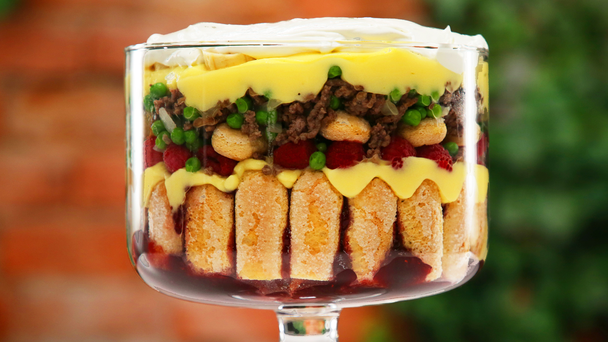

Rachel's English Trifle

Desciption of Rachel's Beef Trifle
Who could forget the ill-fated Thanksgiving of '99,
when Monica foolishly put Rachel on dessert duty?
A misunderstanding with a sticky cookbook resulted in a
"dessert" comprised of half trifle, half shepherd's pie.
In the immortal words of Joey Tribbiani: "What's not to like? Custard, good.
Jam, good. Beef, GOOD!"
Ingredients
- 1 Pound Ground Beef
- 1 cup diced onion
- 1 cup frozen green peas
- 1 teaspoon of salt and pepper each
- 1 package of Lady Fingers, cut in halves
- 1 cup raspberry jam
- 2 cups vanilla custard or pudding
- 1 cup fresh raspberries
- 1 fresh banana
- 2 cups of whipped cream
Steps
- Heat skillet over medium heat; add ground beef and cook
- Add onnion, cook another 10 minutes
- Add peas, salt, pepper and cook another 4 minutes, remove from heat and set aside
- Line bottom of trifle dish with half of the lady fingers
- Top lady fingers with jam, spread custard over jam and top with raspberries
- Add remaining lady fingers on top, add layer of custard
- Top with lady fingers, adding beef mixture on top
- Add sliced bananas on top with whip cream topping